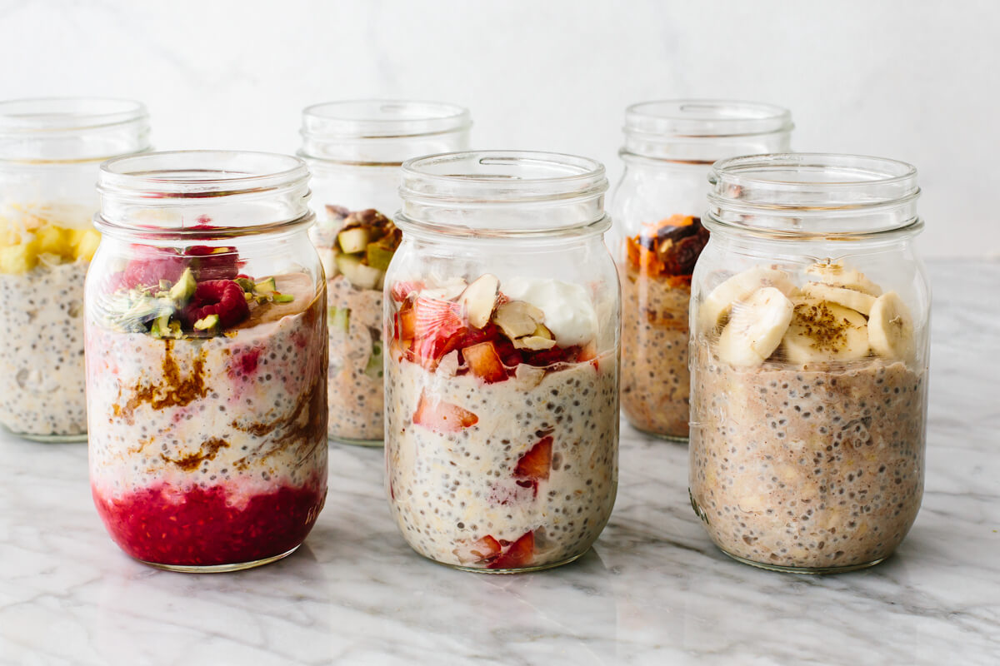

Overnight oats
 1 jar
1 jar 5 min preparation
5 min preparation Veggie
Veggie Sweet
Sweet

480 mLoats720 mLmilk (almond e.g.)3 tbsppeanut butter
Mix in a jar until combined.
6 tbspchia seeds¼ tspground cinnamon- Fruits, toppings to taste
Add toppings and gently mix.
Keep the jar in the fridge overnight.